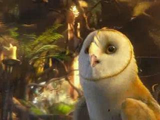
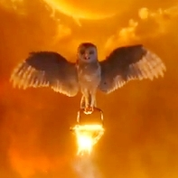

 
On a certain day they are selected for their chaws. These chaws are:
When the owls are still young the are not in chaws. They have to take classes first. The owls have to take classes for about one year. Then on one day of the year all the owls that are ready to be put in a chaw are put in one. It is not randon though the gaurdians and council chose. Each chaw has an item for the chosing day. The gaurdians and council put the item for each chaw under their bed sheets. The owls that are being chosen chaws are somewhere else during that time. Then the owls come back and find out their chaws.
For Navigation they learn how to navigation many ways such as the stars. In tracking they learn how to track. The weather chaw teaches how to flu in weather such as strong wind. For coillering the learn how to collect coals in a forest fire. They also have to take the weather chaw for the coillering chaw. The weather chaw teaches how to fly in bad weather such as hurricanes. For Search and Rescue they save baby owls and take them to the Grea Ga'Hoole Tree. Even when they are in chaws the have to take classes.